PACS
Vendor-neutral archive and zero-footprint viewer at the heart of the radiology suite.
Explore the solutionRadiology · Mobile app · iOS & Android
Your advanced medical imaging solution right in your pocket: capture, store and share high-quality DICOM-compliant clinical photographs from a smartphone, straight into PACS.
Overview
Introducing DICOM Camera - your advanced medical imaging solution right in your pocket. This innovative app seamlessly integrates with medical imaging systems, allowing healthcare professionals to capture, store, and share high-quality DICOM-compliant images using their iOS devices. DICOM Camera is a revolutionary medical imaging app that transforms your smartphone into a powerful DICOM-compatible camera, bringing convenience and efficiency to healthcare professionals and patients alike. With its advanced features and seamless integration with medical systems, DICOM Camera enables easy capture, storage, and sharing of high-quality medical images.
Workflow
Search the patient, scan the barcode, capture the images and they are uploaded to PACS and the photo library against the right patient — with the worklist coming straight from HIS / RIS.
Screenshots
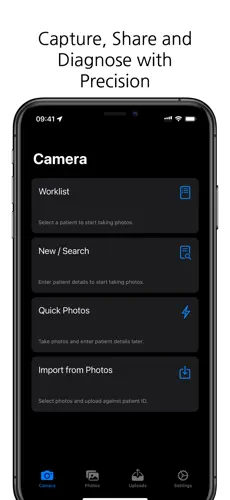
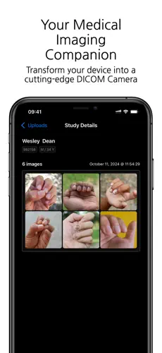
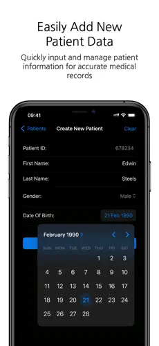
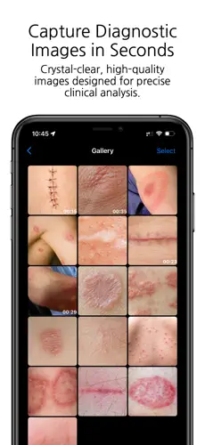
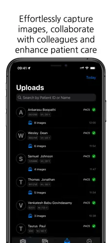
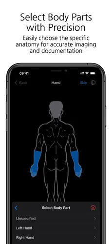
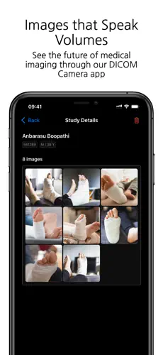
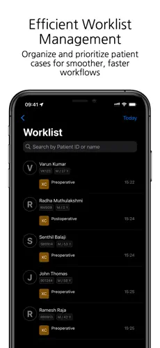
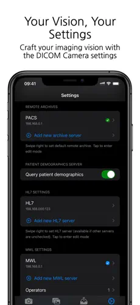
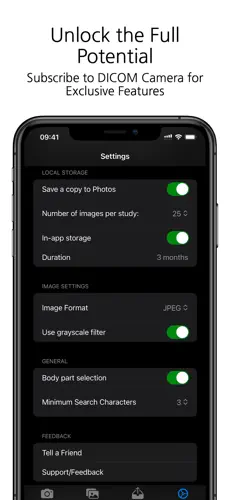
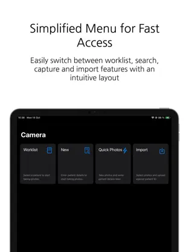
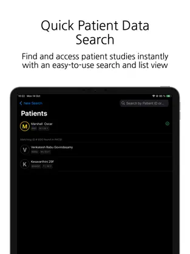
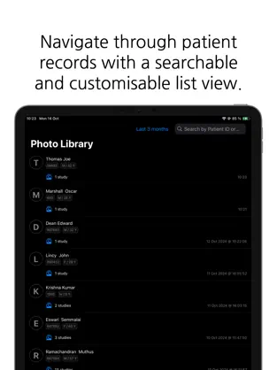
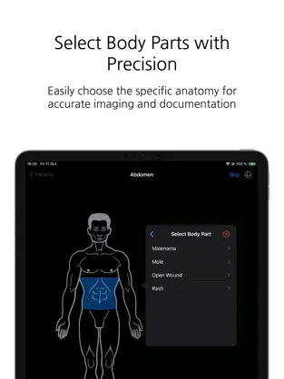
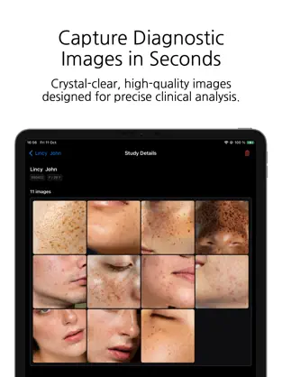
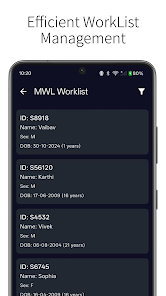
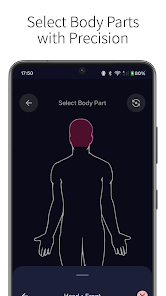
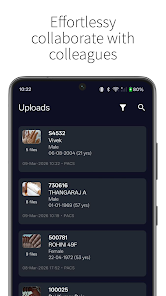
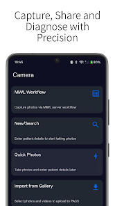
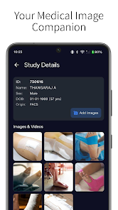
Key features
With DICOM Camera, medical professionals can rely on a versatile and user-friendly solution to capture and manage medical images efficiently, improving patient care, and enhancing the overall healthcare experience. Enhance your clinical practice with the power of DICOM Camera. Empower healthcare providers with a portable, efficient, and secure solution for capturing and managing medical images, fostering collaboration, and improving patient care.
Radiology
DICOM Camera is one part of Raster's Radiology range. The rest plugs straight into it.
Vendor-neutral archive and zero-footprint viewer at the heart of the radiology suite.
Explore the solutionScheduling, work-lists, billing and reporting for the department, sharing one vendor with iPACS.
Explore the solutionStudies routed securely to off-site radiologists, with on-site performance over low bandwidth.
Explore the solutionCD/DVD publishing of studies straight from the archive, with a viewer on every disc.
Explore the solutionTell us about your departments, workflow and existing systems, and we'll map DICOM Camera to them.